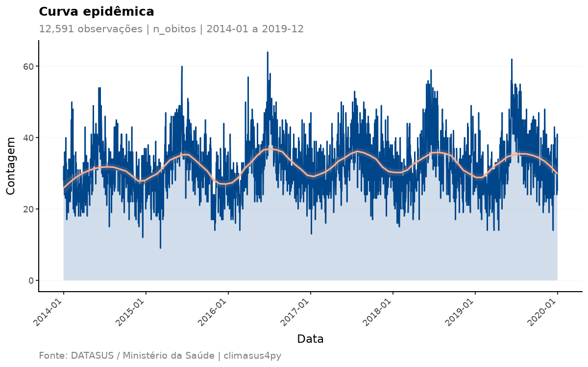
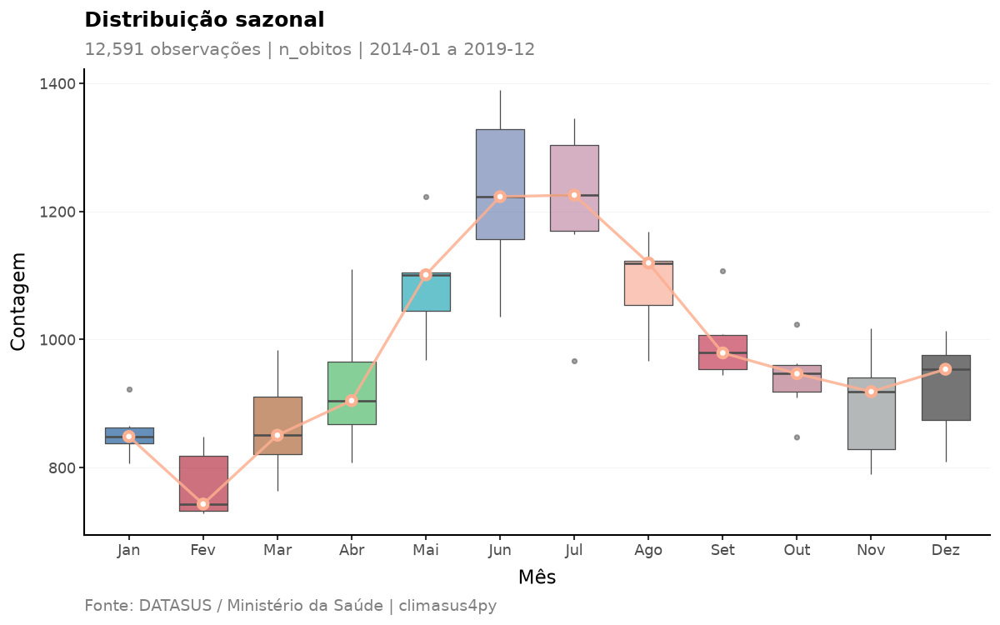
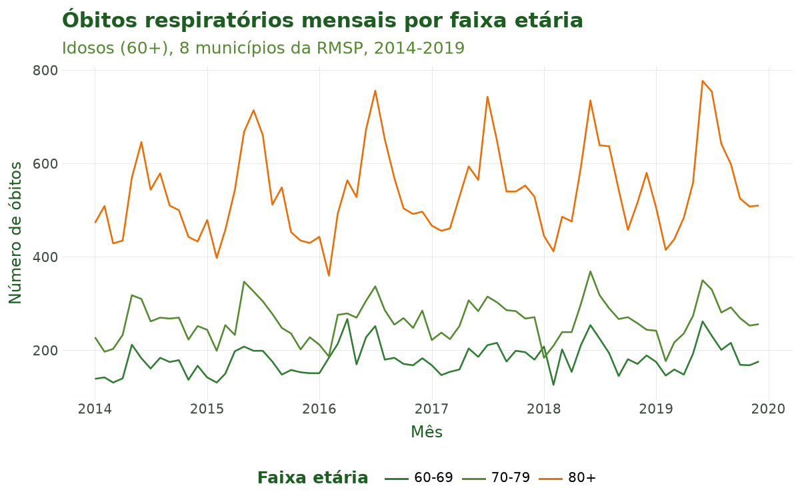
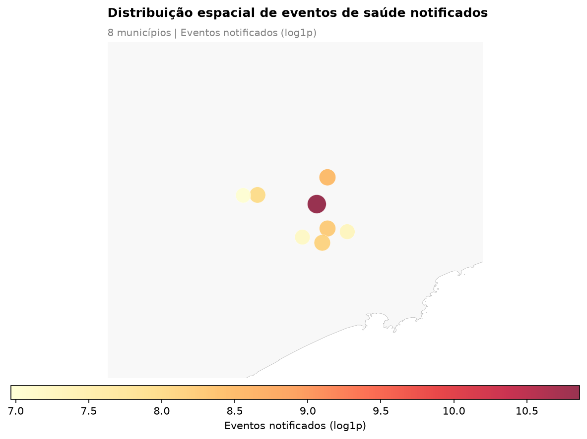

Tutorial 4: Variáveis e Agregação¶
← Voltar para a Trilha do Pipeline
Objetivo¶
Ao final deste tutorial você será capaz de transformar microdados individuais em uma série temporal pronta para análise. São duas operações encadeadas e duas de visualização:
- Criar variáveis derivadas —
sus_data_create_variables()— gerando faixas etárias (definidas por você, de risco climático e quinquenais do IBGE) e variáveis de calendário (ano, mês, trimestre, estação do ano); - Agregar no tempo e no espaço —
sus_data_aggregate()— convertendo os registros individuais em contagens por período e por município (diária, mensal, sazonal etc.); - Visualizar a série temporal —
sus_data_plot_aggregate_ts()— com curvas epidêmicas, boxplots sazonais, mapas de calor de calendário e tendências anuais; - Visualizar a distribuição espacial —
sus_data_plot_aggregate_map()— com mapas de bolhas ou coropléticos municipais.
Esta é a quarta etapa do pipeline (criar variáveis → agregar). Ela ocupa um lugar crítico: é aqui que os dados deixam de ser uma tabela de eventos individuais e passam a ter a forma exigida pelos modelos clima–saúde do Tutorial 9 — uma contagem de óbitos por unidade de tempo.
Contexto científico¶
Estudos de séries temporais em epidemiologia ambiental modelam a contagem de desfechos por período (por exemplo, óbitos por dia) em função da exposição ambiental (temperatura, poluição). Para isso, os microdados precisam ser agregados em uma grade temporal regular e, frequentemente, estratificados por faixa etária, já que a vulnerabilidade ao calor e ao frio varia muito com a idade (Gasparrini et al., 2015; Bhaskaran et al., 2013).
Duas decisões metodológicas desta etapa têm consequências diretas na análise:
- A unidade temporal de agregação (
time_unit) define a resolução do estudo. Séries diárias captam efeitos agudos de curto prazo (ideais para o DLNM); séries mensais ou sazonais evidenciam padrões de longo prazo e sazonalidade (Bhaskaran et al., 2013). - O preenchimento de datas faltantes (
complete_dates=True) garante uma série sem lacunas: dias sem nenhum óbito recebem contagem zero. Sem isso, os modelos de série temporal interpretariam erroneamente a ausência de uma data como ausência de informação, e não como um zero verdadeiro.
As faixas etárias seguem categorizações reconhecidas — incluindo a estrutura quinquenal do IBGE (0–4, 5–9, …, 80+), que assegura comparabilidade nacional e internacional — e uma faixa de risco climático (0–4, 5–64, 65+) desenhada para destacar os grupos mais vulneráveis (IBGE, 2010; WHO, 2014).
Caso condutor. Investigamos a temperatura e os desfechos de saúde em idosos (60+) na Região Metropolitana de São Paulo, 2014–2019. Partindo dos óbitos respiratórios de idosos filtrados no Tutorial 3, criamos faixas etárias (60–69, 70–79, 80+) e variáveis de calendário, e agregamos em série diária e em série mensal por faixa etária. A série resultante alimenta a junção espacial (Tutorial 5) e, adiante, a modelagem (Tutorial 9).
Dados utilizados¶
| Item | Detalhe |
|---|---|
| Entrada | resp_idosos, a saída do Tutorial 3 |
| Desfecho | Óbitos respiratórios (CID-10 J00–J99) em idosos (60+) |
| Sistema | SIM-DO (mortalidade) |
| Recorte | Oito municípios da Região Metropolitana de São Paulo, 2014–2019 |
Pipeline completo¶
Os blocos abaixo reproduzem o que o script
tools/tutoriais/tutorial_04_variaveis_agregacao.py
executa. Comece carregando o pacote e refazendo, a partir do cache, os passos dos tutoriais
anteriores:
import climasus4py as cs
obitos = cs.sus_data_import(system="SIM-DO", uf="SP", year=[2014, 2015, 2016, 2017, 2018, 2019])
obitos_limpo = cs.sus_data_clean_encoding(obitos)
obitos_padr = cs.sus_data_standardize(obitos_limpo, lang="pt")
RMSP = ["São Paulo", "Guarulhos", "São Bernardo do Campo", "Santo André",
"Osasco", "Mauá", "Carapicuíba", "Diadema"]
resp_idosos = cs.sus_filter(obitos_padr, groups="respiratory", age_min=60, city=RMSP)
Criar variáveis derivadas¶
sus_data_create_variables() cria faixas etárias e variáveis de calendário em uma só chamada.
Aqui usamos faixas voltadas ao recorte de idosos do caso condutor e ligamos as variáveis
sazonais com a região climática "sudeste".
obitos_vars = cs.sus_data_create_variables(
resp_idosos,
create_age_groups=True,
age_breaks=[60, 70, 80, 999], # 999 = sem limite superior
age_labels=["60-69", "70-79", "80+"],
create_calendar_vars=True, # ano, mês, trimestre, ...
create_climate_vars=True, # estação do ano
climate_region="sudeste", # região climática do caso
hemisphere="south", # Brasil
lang="pt",
)
Além de faixa_etaria (definida por age_breaks e age_labels), a função cria a idade em
anos (idade_anos), a faixa de risco climático (grupo_risco_climatico) e a faixa
quinquenal do IBGE (faixa_etaria_ibge). Com create_calendar_vars=True, cria ano, mes,
trimestre, semana_epidemiologica e outras variáveis de calendário; e, com climate_region
informada, a estação do ano (estacao_climatica e estacao_seca_chuvosa) — sem ela, a estação
astronômica (estacao_astronomica).
Agregar em série temporal diária¶
sus_data_aggregate() converte os registros individuais em contagens. Com fun="count" e o
sistema SIM, a coluna de contagem recebe o nome n_obitos. complete_dates=True preenche os
dias sem óbito com zero.
serie_diaria = cs.sus_data_aggregate(
obitos_vars,
time_unit="day", # uma observação por dia
fun="count", # contagem de óbitos
join_col="ocorrencia", # conta pelo município onde o óbito ocorreu
complete_dates=True, # preenche dias sem evento com zero
lang="pt",
)
As contagens saem por dia e por município: o argumento join_col escolhe qual município
usar — "ocorrencia" (onde o óbito ocorreu, o padrão para o SIM) ou "residencia" (onde a
pessoa morava).
Agregar em série mensal por faixa etária¶
A mesma função, agora estratificando por faixa_etaria. Esta é a série usada nos próximos
tutoriais.
serie_mensal = cs.sus_data_aggregate(
obitos_vars,
time_unit="month",
fun="count",
group_by=["faixa_etaria"], # faixa etária criada acima
join_col="ocorrencia",
complete_dates=True,
lang="pt",
)
Visualizar a série temporal¶
sus_data_plot_aggregate_ts() recebe uma série agregada e produz gráficos prontos para
publicação. plot_type aceita "epidemic", "seasonal", "heatmap" e "trend" — ou uma
lista com vários deles.
# Curva epidêmica diária com suavização loess
cs.sus_data_plot_aggregate_ts(
serie_diaria,
plot_type="epidemic",
smooth_method="loess",
palette="lancet",
lang="pt",
)
# Boxplot da distribuição sazonal mensal
cs.sus_data_plot_aggregate_ts(
serie_diaria,
plot_type="seasonal",
lang="pt",
)
Visualizar a distribuição espacial¶
sus_data_plot_aggregate_map() mapeia as contagens por município, a partir de uma série
agregada que tenha a coluna de município. Para o mapa, agregamos pelo município de
residência: assim as bolhas mostram onde moravam os idosos do caso condutor — os oito
municípios da RMSP —, e não os locais onde os óbitos ocorreram, que se espalham por outros
municípios e estados.
serie_muni = cs.sus_data_aggregate(
obitos_vars,
time_unit="month",
fun="count",
join_col="residencia", # o município onde a pessoa morava
lang="pt",
)
cs.sus_data_plot_aggregate_map(
serie_muni,
map_type="bubble",
log_scale=True,
palette="YlOrRd",
lang="pt",
)
Ao final desta etapa temos serie_mensal (por faixa etária) e serie_muni (por município) — a
base temporal e espacial que alimenta os próximos tutoriais.
Características das funções¶
sus_data_create_variables()¶
Cria variáveis derivadas a partir da idade e da data do evento.
| Argumento | Essencial? | Descrição |
|---|---|---|
rel |
sim | Dados padronizados (saída de sus_data_standardize() ou de sus_filter()) |
create_age_groups |
sim | Cria faixa_etaria, grupo_risco_climatico e faixa_etaria_ibge (padrão True) |
age_breaks |
opcional | Cortes das faixas etárias; padrão [0, 5, 15, 60, 999]. Use 999 para "sem limite superior" |
age_labels |
opcional | Rótulos das faixas; sem ele, são gerados a partir de age_breaks |
create_calendar_vars |
sim | Cria ano, mes, trimestre etc. (padrão True) |
create_climate_vars |
opcional | Cria a estação do ano (padrão True) |
climate_region |
opcional | Região climática ("norte", "nordeste", "centro-oeste", "sudeste", "sul"); define a estação seca e chuvosa |
hemisphere |
opcional | "south" (padrão, Brasil) ou "north" |
age_col / date_col |
opcional | Forçam a coluna de idade ou de data; sem eles, são detectadas |
lang / verbose |
opcional | Idioma ("pt", "en", "es") e mensagens |
Retorno: os dados com as novas colunas e o estágio variables registrado. A idade em anos
vem do código de idade do DATASUS, de três dígitos: o primeiro é a unidade (minutos, horas,
dias, meses ou anos) e os outros, a quantidade — 445 é 45 anos. Códigos que não são uma idade,
como 999 (idade ignorada), ficam sem idade.
sus_data_aggregate()¶
Agrega os microdados individuais em uma série temporal de contagens.
| Argumento | Essencial? | Descrição |
|---|---|---|
rel |
sim | Dados padronizados, filtrados ou com variáveis criadas |
time_unit |
sim | "day", "week", "month" (padrão), "quarter", "year", "season", "5 days" ou "14 days" |
fun |
opcional | "count" (padrão), "sum", "mean", "median", "min", "max", "sd", "q25", "q75", "q95", "q99" ou um dicionário com vários |
group_by |
opcional | Colunas de estratificação, além do município (ex.: ["faixa_etaria", "sexo"]) |
join_col |
opcional | Município usado na contagem: "ocorrencia" (padrão para o SIM) ou "residencia" (padrão para os demais sistemas) |
value_col |
só se fun não for "count" |
Coluna numérica a agregar |
complete_dates |
recomendado | True preenche os períodos sem evento com zero (padrão False) |
date_col |
opcional | Coluna de data; sem ela, é detectada pelo sistema |
lang / verbose |
opcional | Idioma e mensagens |
Retorno: a série agregada, com uma coluna date (início do período), a coluna do município,
as colunas de group_by e a coluna de contagem, nomeada pelo sistema: n_obitos (SIM),
n_internacoes (SIH), n_nascimentos (SINASC), n_casos (SINAN), n_procedimentos (SIA),
n_estabelecimentos (CNES).
sus_data_plot_aggregate_ts()¶
Gráficos de série temporal a partir de uma série agregada.
| Argumento | Descrição |
|---|---|
df |
Série agregada |
value_col |
Coluna do desfecho; sem ela, é detectada (n_obitos, n_casos, …) |
plot_type |
"epidemic" (curva epidêmica), "seasonal" (boxplot por mês), "heatmap" (calendário) ou "trend" (total de cada ano, com a variação percentual em relação ao ano anterior) — ou uma lista com vários |
group_col / facet_col |
Coluna para as cores e coluna para os painéis |
smooth_method / smooth_span |
Suavização da curva epidêmica: "loess" (padrão), "gam", "lm" ou "none"; smooth_span (padrão 0.25) controla o quanto a curva loess acompanha a série — quanto menor, mais de perto |
log_transform |
Aplica log1p no eixo vertical |
palette |
"lancet" (padrão), "nejm", "jco", "nature", "aaas", "sus", "colorblind" |
title / subtitle / caption |
Textos do gráfico; sem eles, são gerados automaticamente |
save_path |
Caminho para salvar a figura (width, height e dpi ajustam o tamanho) |
lang / verbose |
Idioma e mensagens |
Retorno: o gráfico (um objeto do plotnine). Não altera os dados.
sus_data_plot_aggregate_map()¶
Mapa municipal das contagens agregadas.
| Argumento | Descrição |
|---|---|
df |
Série agregada com a coluna do município |
value_col |
Coluna do desfecho; sem ela, é detectada |
map_type |
"choropleth" (padrão), "bubble" ou "quantile_choropleth" |
rate_per_100k |
True mostra a taxa por 100 mil habitantes: a contagem dividida pela população do município e multiplicada por 100.000 |
period |
[início, fim] para filtrar as datas antes de somar |
city / top_n |
Restringe a municípios; rotula os top_n maiores (no mapa de bolhas) |
state_borders |
Desenha as fronteiras estaduais |
palette |
Paleta de cores |
log_scale |
Escala de cor logarítmica |
title / subtitle / caption, save_path |
Como em sus_data_plot_aggregate_ts() |
lang / verbose |
Idioma e mensagens |
Retorno: o mapa (uma figura do matplotlib). Não altera os dados.
Resultados ilustrados¶

Figura 1. Curva epidêmica diária de óbitos respiratórios em idosos (60+) em oito municípios
da Região Metropolitana de São Paulo, 2014–2019, gerada por
sus_data_plot_aggregate_ts(plot_type="epidemic"). A área e a linha mostram a contagem diária;
a curva suavizada (loess), com sua faixa de confiança, destaca a tendência de fundo — com um pico
a cada inverno.

Figura 2. Distribuição sazonal mensal (sus_data_plot_aggregate_ts(plot_type="seasonal")).
Cada caixa reúne o total de óbitos daquele mês em cada um dos seis anos, e a linha liga as
medianas. Os boxplots evidenciam a sazonalidade de inverno (junho–agosto) da mortalidade
respiratória de idosos — o ponto de partida da hipótese clima–saúde do caso condutor.

Figura 3. Série mensal estratificada pelas faixas etárias criadas em
sus_data_create_variables() (60–69, 70–79, 80+). Os óbitos se concentram na faixa de 80 anos
ou mais, que também tem os picos de inverno mais marcados.

Figura 4. Distribuição espacial dos óbitos por município de residência
(sus_data_plot_aggregate_map(map_type="bubble")). O tamanho e a cor das bolhas codificam o
total de óbitos de cada um dos oito municípios da RMSP (escala log1p); o município de São Paulo
concentra a maior parte.
Tabela 1. Amostra das variáveis derivadas por sus_data_create_variables() (faixas etárias e
calendário).
| data_obito | idade_anos | faixa_etaria | grupo_risco_climatico | faixa_etaria_ibge | ano | mes | trimestre | estacao_climatica | estacao_seca_chuvosa |
|---|---|---|---|---|---|---|---|---|---|
| 2015-02-05 | 90 | 80+ | Alto Risco (65+) | 80+ | 2015 | 2 | 1 | Chuvosa | Chuvosa |
| 2015-03-06 | 91 | 80+ | Alto Risco (65+) | 80+ | 2015 | 3 | 1 | Chuvosa | Chuvosa |
| 2015-10-07 | 68 | 60-69 | Alto Risco (65+) | 65-69 | 2015 | 10 | 4 | Chuvosa | Chuvosa |
| 2015-02-15 | 66 | 60-69 | Alto Risco (65+) | 65-69 | 2015 | 2 | 1 | Chuvosa | Chuvosa |
| 2015-11-30 | 62 | 60-69 | Risco Padrão (5-64) | 60-64 | 2015 | 11 | 4 | Chuvosa | Chuvosa |
Tabela 2. Resumo das séries agregadas: número de períodos, total de óbitos e intervalo de datas. As linhas são mais numerosas que os períodos porque cada série tem uma linha por período e por município (e, na mensal, por faixa etária).
| Série | Unidade | Períodos | Linhas | Total de óbitos | Início | Fim |
|---|---|---|---|---|---|---|
| Diária | dia | 2.191 | 12.591 | 70.742 | 2014-01-01 | 2019-12-31 |
| Mensal, por faixa etária | mês | 72 | 2.855 | 70.742 | 2014-01-01 | 2019-12-01 |
Referências¶
- Bhaskaran, K., Gasparrini, A., Hajat, S., Smeeth, L., & Armstrong, B. (2013). Time series regression studies in environmental epidemiology. International Journal of Epidemiology, 42(4), 1187–1195.
- Gasparrini, A., Guo, Y., Hashizume, M., Lavigne, E., Zanobetti, A., Schwartz, J., et al. (2015). Mortality risk attributable to high and low ambient temperature: a multicountry observational study. The Lancet, 386(9991), 369–375.
- Instituto Brasileiro de Geografia e Estatística (IBGE). (2010). Censo Demográfico 2010. Rio de Janeiro: IBGE.
- World Health Organization (WHO). (2014). Quantitative risk assessment of the effects of climate change on selected causes of death, 2030s and 2050s. Geneva: WHO.
Navegação¶
- Voltar para a Trilha do Pipeline
- Anterior: Tutorial 3 — Filtragem
- Próximo: Tutorial 5 — Junção Espacial